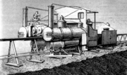
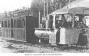
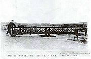
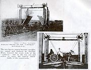

Прибытие поезда
Прибытие поезда
Моноре́льс систе́мы Ларти́га (по имени разработавшего систему французского инженера Шарля Лартига (1834—1907, Charles Lartigue)) — один из первых монорельсов вообще и одновременно один из первых монорельсов, имевших практическое применение. Одна из самых известных дорог, на которой он использовался, называлась Listowel and Ballybunion Railway. Предшествующая система Лартига, работавшая без паровозов и протянувшаяся на 60 миль, была построена в Алжире.[1]
12 декабря 1903 года компанией Warwick Trading Company при поддержке American Mutoscope & Biograph (США), S. Lubin (1904) (США) и Kleine Optical Company (США) был выпущен чёрно-белый немой фильм про «единственную железную дорогу в мире, работающую на одном рельсе».[2]

Паровоз Лартига
В поперечном сечении путь был похож на букву «А» высотой около метра.[1] Поверху шёл основной (несущий) рельс, снизу по бокам шли два направляющих рельса. Этот путь устанавливался на поверхности земли на шпалах. Секции в форме буквы «А» устанавливались на расстоянии примерно метра друг от друга.[1] Так как длина «ног» секций может быть произвольной, то при строительстве нет необходимости выравнивать землю под путями.
Паровозы и вагоны, напоминавшие своего рода «сиамских близнецов», опирались на основной рельс и как бы подвешивались на нём. У паровозов было две топки и два котла — справа и слева от рельса. Колёса и цилиндры располагались между котлами.
Кроме основных колёс, опиравшихся на верхний рельс, паровозы и вагоны имеют поддерживающие колёса, опиравшиеся на направляющие рельсы и предохранявшие поезд от опрокидывания.

Поезд монорельса во Франции
Возможно, идея создания железной дороги такого рода была навеяна Лартигу видом верблюдов в Алжире, перевозивших грузы в корзинах, подвешенных с двух сторон горба.[1] По задумке Лартига изобретённая им транспортная система должна была использоваться в тех случаях, когда строить настоящую железную дорогу слишком дорого, а скорость не имеет большого значения. Также такую систему легко разбирать и переносить с места на место.
Первая линия такого монорельса была построена во Франции и соединяла Флюрс (Fleurs) и Панисьер (Panissières, департамент Луары). В октябре 1877 года по заказу Лартига был изготовлен паровоз, имевший следующие характеристики[3]:
| Диаметр колёс: | 2 фута |
| Диаметр цилиндра: | 7 дюймов |
| Ход поршня: | 12 дюймов |
| Давление пара: | 150 фунтов/кв. дюйм |

Вид монорельса в Баллибанионе; последний вагон поезда
В 1886 году система демонстрировалась в Лондоне (был построен отрезок пути Холмы Тотхилл — улица Виктории — Вестминстер, по которому ездил паровоз).[1] Демонстрация вызвала интерес, и Лартигу удалось собрать тридцать тысяч фунтов стерлингов на строительство монорельса Listowel and Ballybunion Railway в Ирландии, между морским курортом Баллибанион (Ballybunion) и городом Листоуэл (Listowel), где кончалась обыкновенная железная дорога.
Линия монорельса общей длиной в девять с половиной миль была открыта в 1888 году, через шесть месяцев после начала строительства. Строительство одной мили монорельсовой дороги стоило три тысячи фунтов стерлингов — намного дешевле строительства обыкновенной железной дороги.
В 1920 году эта железная дорога имела три паровоза Simplex (из которых один использовался редко и был скорее резервом). Как утверждалось, каждый паровоз мог тянуть груз в 240 тонн со скоростью в тридцать миль в час. Имелось одиннадцать пассажирских вагонов, насчитывавших 52 места первого класса и 228 мест третьего класса, пять грузовых вагонов и семнадцать вагонов для насыпных грузов[3].
Важнейшим фактором при эксплуатации такой дороги было обеспечение равновесия поезда. Перед отправлением кондуктор следил за тем, чтобы количество пассажиров в половине вагона с одной стороны рельса соответствовало количеству пассажиров в половине вагона с другой стороны рельса.

Поворотный круг системы, использовавшийся для формирования составов

Подъёмные мосты для возможности переезда через монорельс
При эксплуатации монорельса возникло множество проблем. Вместо переезда, как на обыкновенной железной дороге, на пересечениях линии монорельса с дорогами приходилось устраивать конструкции, напоминающие подъёмные мосты. Имеются также упоминания и о другом типе переездов (в статье, датированной 1920 годом). На этих пересечениях часть линии монорельса, пересекавшая дорогу, делалась поворотной и при необходимости поворачивалась вдоль дороги на оси, закреплённой посередине дороги. Возможно, оба типа переездов существовали одновременно, или со временем один тип заменил другой.
Проблемой было также составление поездов. На обыкновенной железной дороге для этого производят маневровые работы, но на монорельсовом пути невозможно было сделать стрелки, поэтому составы можно было формировать только при помощи поворотного круга.
Все эти проблемы, а также гражданская война, привели к тому, что в 1924 году монорельс был закрыт[4]. Идея себя не оправдала, и хотя монорельс приобрёл характер аттракциона и привлекал многочисленных туристов, в связи с техническими трудностями дальнейшая его эксплуатация была невозможна.
Последняя монорельсовая линия системы Лартига была построена в США, в пустыне Мохаве (Mojave), штат Калифорния, и использовалась фирмой Sierra Salt Corporation при добыче магния для его перевозки из Crystal Hills в Trona, где располагалась ближайшая железнодорожная станция. Линия просуществовала два года и была закрыта в связи с прекращением разработки магниевых шахт.[3]
Монорельс Лартига в итоге так и остался техническим курьёзом, так как не имел особых преимуществ перед ближайшим конкурентом — узкоколейными железными дорогами (они тоже были дёшевы в строительстве и эксплуатации, их тоже можно было переносить с места на место), и в то же время имел много недостатков (переезды, составление поездов).
В 1988 году с связи со столетним юбилеем монорельса возродился интерес к этой необычной транспортной системе; этому способствовала публикация нескольких книг о нём. Один любитель истории техники, Майкл Гэрин (англ. Michael Guerin), даже отреставрировал один вагон и пятьдесят метров пути, чудом сохранившихся спустя шестьдесят лет после закрытия монорельсовой дороги. В середине 1990 года был создан комитет по восстановлению монорельса Лартига (Lartigue Restoration Committee), возглавляемый Джимми Деениханом (Jimmy Deenihan TD) и Джеком МакКенной (Jack McKenna), путешествовавшим по стопам изобретателя системы.[5] После сбора средств, в котором активное участие приняли местные жители,[6] комитет приступил к воссозданию монорельса.
Возрождённый монорельс был открыт в июне 2003 года. Он имеет характер туристической железной дороги.[6] Длина линии составляет примерно 500 метров[4]. Имеется два пассажирских вагона третьего класса, рассчитанных на перевозку сорока пассажиров и являющихся копиями оригинальных вагонов (восстановленных по фотографиям и воспоминаниям бывших пассажиров оригинальной системы).[6] Единственный локомотив также внешне является точной копией оригинального паровоза (осевая формула 0-3-0), он даже едет с оригинальной скоростью (15 миль в час), но приводится в действие дизельным двигателем. Путешествие по дороге начинается менее чем в ста метрах от места, в котором начинался оригинальный путь из Листоуэля.[7] В программу путешествия входит наблюдение за формированием состава с помощью поворотных кругов.
В настоящий день реставрация завершена, и ведётся лишь в мелких деталях. При этом комплекс монорельса дополняет музей Museum and Interpretative Centre, который ранее был грузовым складом, а сейчас выполняет функцию зала ожидания, столовой, кассы и, собственно, музея. В музее собраны памятные вещи, в том числе фотографии, плакаты, билеты, вывески, фонари и газетные статьи, относящиеся к монорельсу и магистральным железным дорогам. В музее есть также кинокомната, где посетители могут посмотреть кадры фильма, снятого про оригинальный монорельс, работавший на пару́; в здании находятся интерактивные модели оригинального поезда и станций.
Вторым объектом, готовящимся к открытию, является Парк Лартига, находящийся в непосредственной близости от ранее существовавшей станции. Парк планируется снабдить пешеходными дорожками и сделать доступным для проведения пикников.